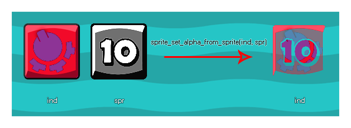

sprite_set_alpha_from_sprite
Changes the alpha (transparency) of one given sprite based on the intensity/value map of another.
Syntax :
sprite_set_alpha_from_sprite(ind, spr);
| Argument | Description |
|---|---|
| ind | The index of the sprite to change the transparency map of. |
| spr | The index of the sprite to take the transparency map data from. |
Returns : N/A
Description
This function uses the value/saturation of one sprite and multiplies it with the alpha of the target sprite. Ideally the sprite being used to generate the new alpha map should be greyscale, with
the white areas having an equivalent alpha value of 1 (opaque), the black areas being equivalent to alpha 0 (transparent), and the grey areas being an alpha inbetween 0 and 1. The sprite that
you are setting the alpha of cannot be a permanent resource, nor can the sprite you use to set the alpha, as this will give an error. This means that you must create two completely
new sprites "on the fly" in some way for the function to work correctly. This can be achieved by using surfaces, or by creating a sprite from the screen (the code example below shows how the
effect can be achieved with surfaces).
Below is an image that illustrates how this function works:

Extended Example :
In this extended example we show how you can create a special effect sprite from two sprite resources. To start with we need to have a controller variable in the Create Event of the instance. This variable is to ensure that the sprite is only created once:
spr_create = true;
Once that is done we need to then go to the Draw Event and add in this code:
if spr_create
{
spr_create = false;
var surf, spr;
surf = surface_create(sprite_get_width(spr_Explosion_Alpha), sprite_get_height(spr_Explosion_Alpha));
surface_set_target(surf);
draw_clear_alpha(c_black, 0);
draw_sprite(spr_Gradient, 0, 0, 0);
sprite_index = sprite_create_from_surface(surf, 0, 0, sprite_width, sprite_height, false, false, sprite_get_xoffset(spr_Gradient), sprite_get_xoffset(spr_Gradient));
draw_clear_alpha(c_black, 0);
draw_sprite(spr_Explosion_Alpha, 0, sprite_get_xoffset(spr_Gradient), sprite_get_xoffset(spr_Gradient));
spr = sprite_create_from_surface(surf, 0, 0, sprite_width, sprite_height, false, false, sprite_get_xoffset(spr_Gradient), sprite_get_xoffset(spr_Gradient));
surface_reset_target();
surface_free(surf);
sprite_set_alpha_from_sprite(sprite_index, spr);
sprite_delete(spr);
}
draw_sprite(sprite_index, 0, x, y);
The above code first checks to see if the control variable is true or not, and if it is, it then runs the code to set the sprite alpha, setting the variable to false to prevent the code from running more than once. In
this case, it creates a surface the size of the alpha mask that we wish to use, then draws the sprite that is to have it's alpha changed onto the surface and creates a new sprite from it, assigning it as the
sprite_index of the object. The code then clears the surface and draws the alpha map sprite to it and creates another new sprite, storing it's index in a local variable. Finally, the new sprite assigned
to the object gets its alpha set from this tempoarary sprite, the surface is freed and the temporary sprite is removed.
There is one final thing to do here, and that is remove the sprite that has been created for the object from memory when not in use. This would either be done in the Destroy Event or the Room End
Event like this:
sprite_delete(sprite_index);